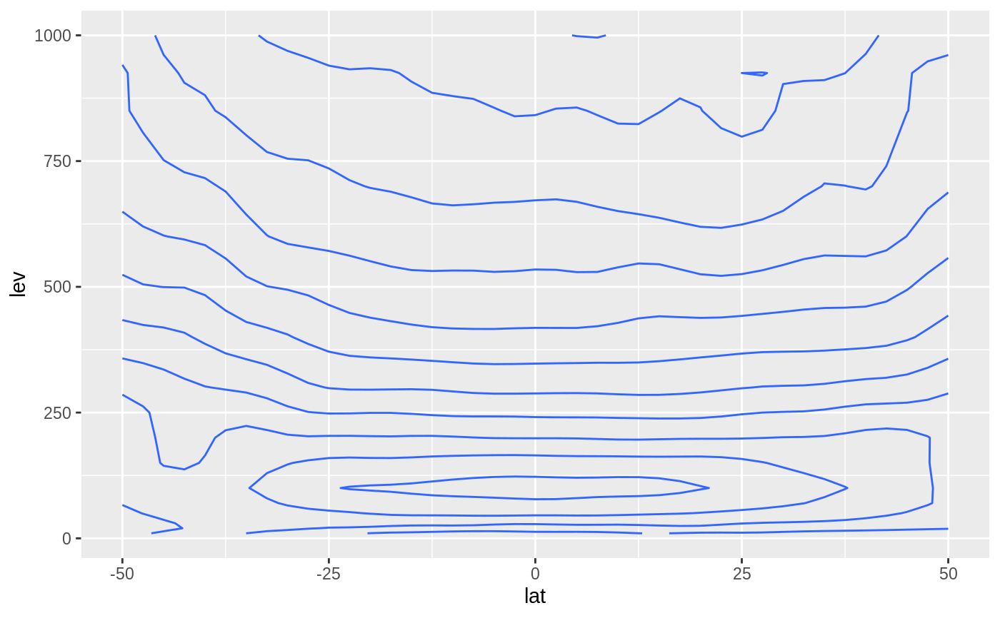

Extended binary operators for easy subsetting.
x %~% target
Similar(x, target, tol = Inf)A logical vector of the same length of x.
%~% can be thought as a "similar" operator. It's a fuzzy version of
%in% in that returns TRUE for the element of x
which is the (first) closest to any element of target.
Similar is a functional version of %~% that also has a
tol parameter that indicates the maximum allowed tolerance.
Other utilities:
Anomaly(),
JumpBy(),
Mag(),
Percentile()
set.seed(198)
x <- rnorm(100)
x[x %~% c(0.3, 0.5, 1)]
#> [1] 0.4979594 0.3024046 0.9361350
# Practical use case: vertical cross-section at
# approximately 36W between 50S and 50N.
cross.lon <- -34 + 360
library(ggplot2)
library(data.table)
ggplot(temperature[lon %~% cross.lon & lat %between% c(-50, 50)],
aes(lat, lev)) +
geom_contour(aes(z = air))
